新規バージョンMayaと、既存設定済みPyCharmにmayapy.exeを追加更新し、連携する方法¶
前ページ 0.MayaとPyCharmの連携 を経て、
既存のPyCharmの設定を更新する必要に迫られた。
新規のMayaとのポート接続は、必至だとはなんとなく想像は出来ていた。
新規の Maya20★★ をPCにインストールした時点で、
追加で、新規の maya div kit の入手と、PyCharm との連携を果たさないといけない！
maya div kitについて
必ず、適宜 Maya Developer Kit を入手する。
Note
https://www.autodesk.com/developer-network/platform-technologies/maya#
更新の度に場所移動する可能性大！！
また、最新の maya の helpページの以下、のようにアクセスし、適宜 Maya Developer Kit を入手する方法もある。
さまざまな変更の可能性もある為、以下のようにアクセスし、読むことも大事！！
Maya 開発者ヘルプ -> ビルド環境を設定する -> Windows 環境(64 ビット)
また、どれをどこにコピーしたらよいかもちゃんと記述されている。
今回は、devkitフォルダと、mkspecsフォルダの2つ。
以下は、maya2018 用。
Note
http://help.autodesk.com/view/MAYAUL/2018/JPN/?guid=__files_Setting_up_your_build_env_Windows_env_32bit_and_64bit_htm
更新の度に場所移動する可能性大！！

旧バージョンの mayapy.exe のままであることは、いつまで経っても旧バージョンの maya での開発を余儀なくされ、困る。
しかし、
そもそも、PyCharmに、追加で、 maya dev kit の mayapy.exe を接続できるかどうか、これまで経験がなかった。
つまり、
命題
PyCharm内で、
旧バージョンの mayapy.exe と 新規バージョンの mayapy.exe の共存が出来るのか！！？。
また、設定の区別が柔軟にできるのか！！？。
試行錯誤した結果、共存と区別が可能なことは判明した。
しかし、混乱を招く恐れがあるので、以下にシンプルな設定手順を残しておく。
Success
maya2018 mayapy.exe を共有使用し、maya2018用のポート記述を、
C:\Users\★★★\Documents\maya\2017\scripts\userSetup.py
C:\Users\★★★\Documents\maya\2018\scripts\userSetup.py
の、両方に同じコード記述を施すことで、maya2017, maya2018 両方でのデバッグか可能をなる。
つまりは、maya2017 上でも、maya2018 mayapy.exe を使用するということです。
■手順1¶
PyCharmにて、
-
File -> Settings..にアクセスし、
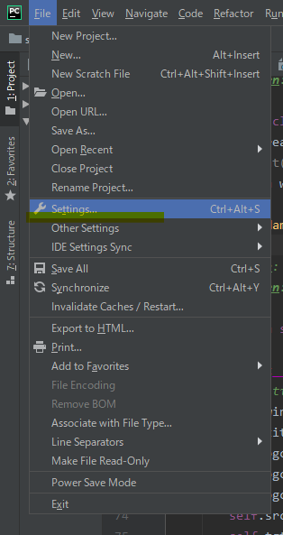
-
Settingswindow が開くので、
一番下の、Other Settings -> MayaCharmをクリニックする。
すると、これまで設定していた、Maya とのポートが表示される。
この例では、
Active Maya Sdk:には、C:\Program Files\Autodesk\Maya2017\bin\mayapy.exe
が表示され、PyCharm デバッグ用ポート番号が、4434等必ず表示されている。
そこで、この度は、新規に maya2018 sdk を追加したいので、
右側の、add アイコン
を押下することで、新規に、2行目の
C:\Program Files\Autodesk\Maya2018\bin\mayapy.exe
が入力され、PyCharm デバッグ用ポート番号が新規に必ず表示されている。
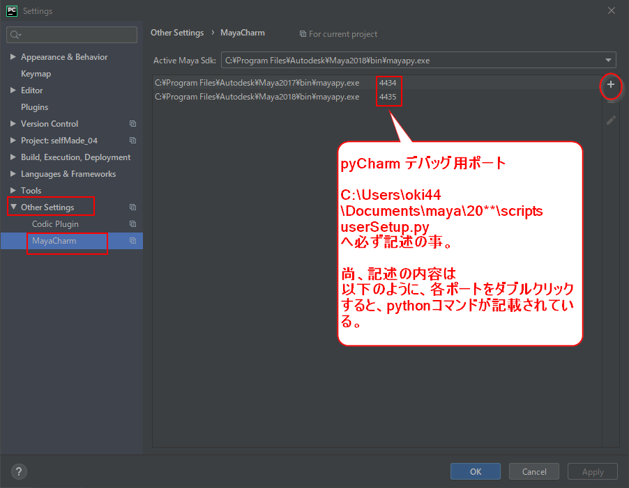 -
また、そのポート番号の行をダブルクリックすると、以下、
Edit Port Numberwindow が開き、
maya の userSetup.py への追加するべきコード内容が、赤枠
のように必ず記述されているので、忘れないようにしたい！！！
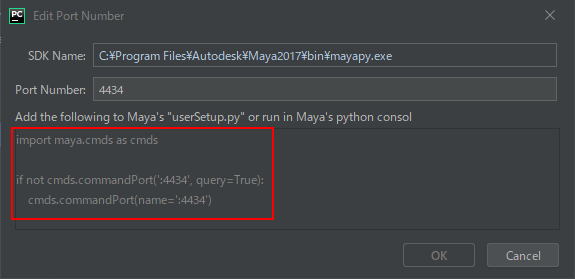Example
1 2 3 4
import maya.cmds as cmds if not cmds.commandPort(':4434', q = True): cmds.commandPort(n = ':4434') -
そして、maya2017 の Maya Sdk は
右側の、remove アイコン
を押下することで、除外しておいた方がよさそうである。
後は、Settingswindow の最下段右のApplyを押下し、登録を一旦終える。
{kind=link}
■手順2¶
以下は、補足であり、必ず行わなければならない記事ではありません。
例として明示的に、selfMade_06_maya2018 と命名。
この記事は必ず行わなければならない記事ではありません
続いて、PyCharmにて、
-
次に、PyCharm用pythonコード記述ファイルを格納する為の、PyCharm project を新規に作成する。
新規の mayapy.exe が動作する環境の準備である。
File -> New Project...にアクセスし、
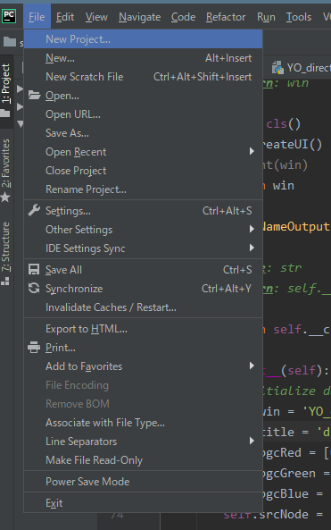
-
ここでは、例として明示的に、
selfMade_06_maya2018と命名。
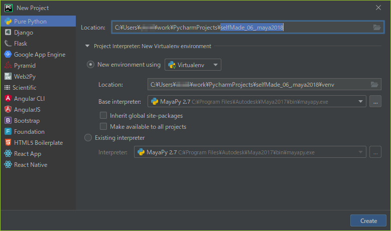 -
黄色のマーカーのように設定する。
ポイントは、
Base interpreter:をクリックすると、
maya2017/...mayapy.exe
maya2018/...mayapy.exe
と2行リストされるので、2行め、maya2018/...mayapy.exe を選択のこと！！
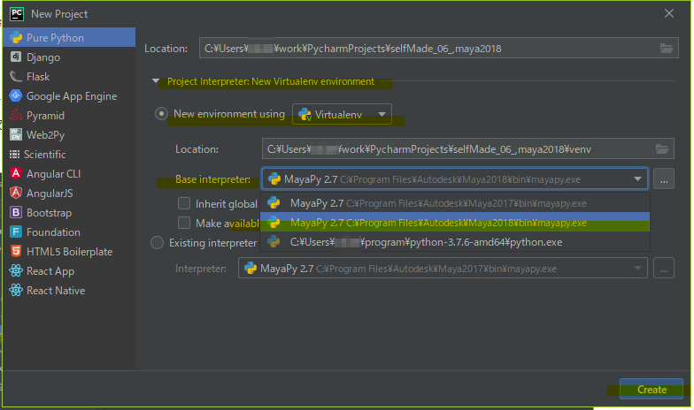
以上の設定で、Createを押下する。 -
Open Projectwindow が出てくる。分かり易く、New Windowで実行する。
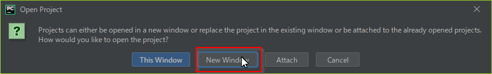 -
一旦、以下のように、
Failed to Create Interpreterwindow が出るが無視して、OKを押下し、登録を一旦終える。
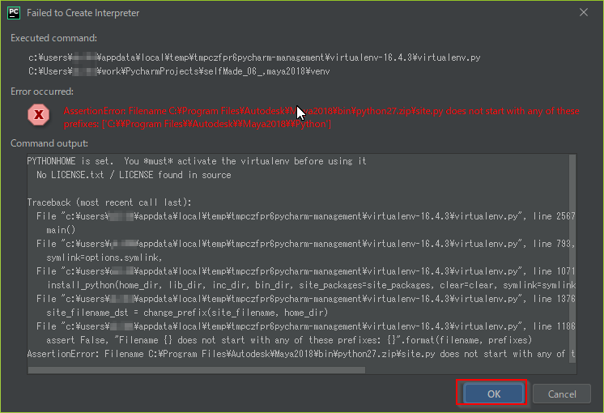 -
windows の所定箇所に、以下のような、フォルダ環境が作成される。
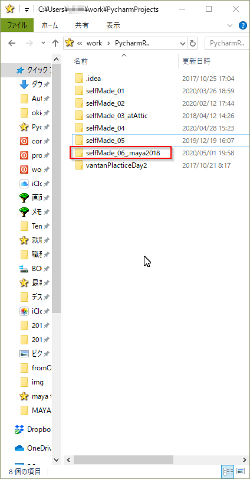
{kind=link}
{kind=link}
■手順3¶
続いて、PyCharmにて、
-
再度、
File -> Settings..にアクセスし、
4行目のタブ、Project:に、例としてプロジェクト名selfMade_06_maya2018が確認できるはずである。
そのタブの階層下に、ツリー表示で、Project Interpreterがみてとれる。
次に、黄色のマーカーのように、
上段の、Project Interpreter:に、maya2018/...mayapy.exeがリストされているので、
一旦、Settingswinodw 右下のApplyを押下してみる。
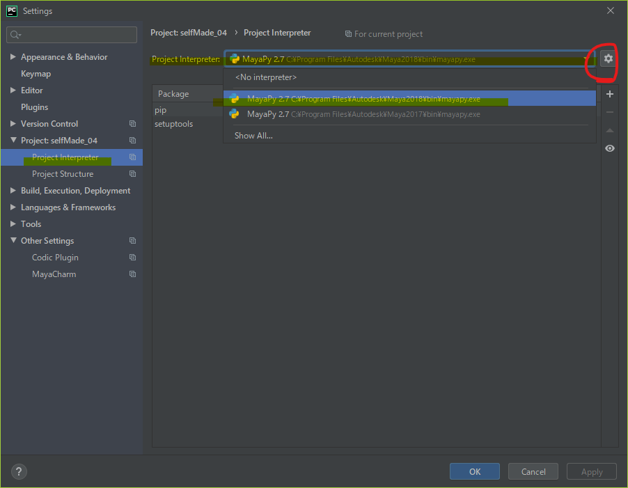
Python packaging toolsがないと怒られたら、
初回は、以下のような一覧がロードされていない可能性が高いので、
Settingswindow の中段右側下にある、visibility アイコン
を一度押下するとインストールが完了する。Install packaging toolsと呼称とのこと。 -
次に、上段歯車マーク、brightness_high アイコンを押下し、
Show All...する。
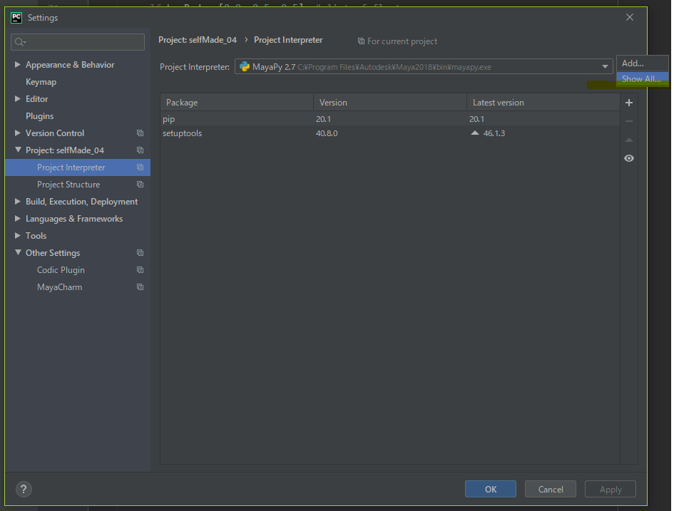 -
すると、
Project Interpreterswindowが開き、以下のように、リストされる。
次に,Project Interpreterswindow の中段右側下にある、フォルダリストマークを押下すると、。。
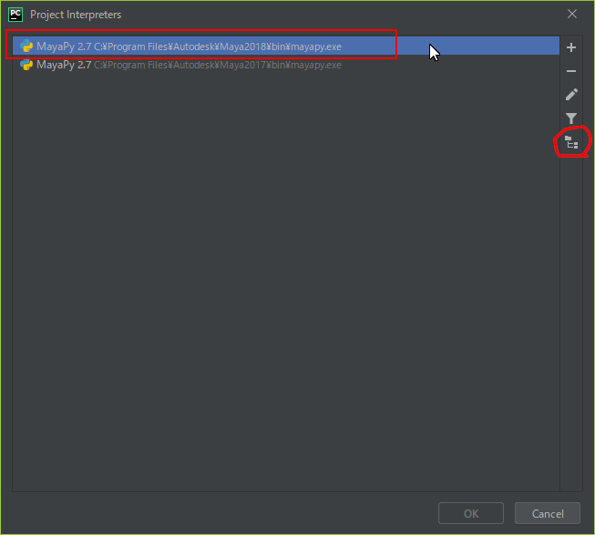 -
以下のように、
Interpreter Pathswindow が開きます。
初回は、以下のような一覧がロードされていない時があるので、上述を繰り返す必要あるかも知れません。
以下の赤枠だけがロードされ、初期の一覧として現れる。
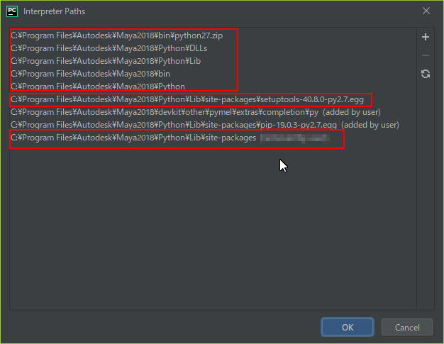 -
そのリストを編集できるので、慎重に、
①C:\Program Files\Autodesk\Maya2018\Python\Lib\site-packages
行を、右側の、remove アイコンで除外する。
すると、(removed by user)と追加表示がなされる。
青枠の行
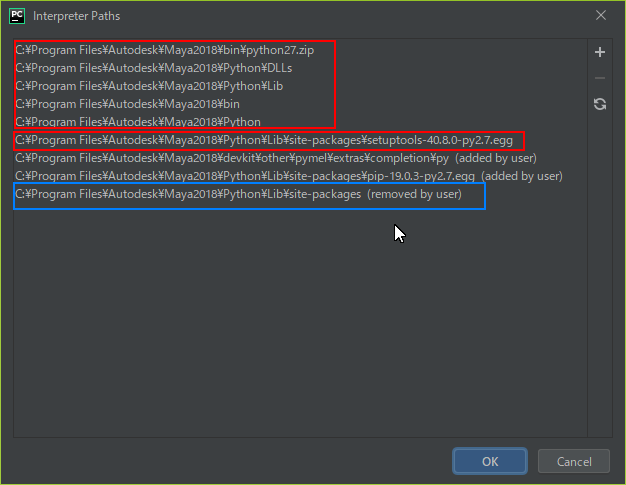 -
②
C:\Program Files\Autodesk\Maya2018\devkit\other\pymel\extras\completion\py
行を、右側の、add アイコンで追加する。
すると、(added by user)と追加表示がなされる。
③C:\Program Files\Autodesk\Maya2018\Python\Lib\site-packages\pip-19.0.3-py2.7.egg
行を、右側の、add アイコンで追加する。
すると、(added by user)と追加表示がなされる。
緑枠の2行
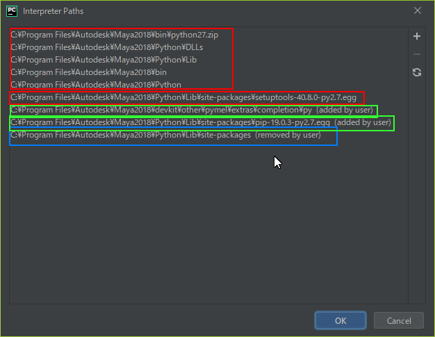
以上、3行の操作を必ず行う！！！
OKを押下して、完了！！
以上。